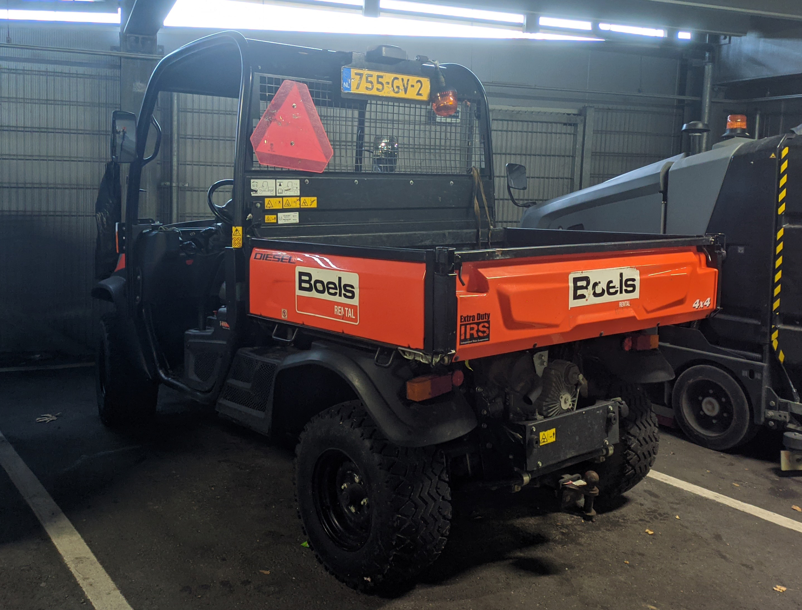

License Plates of
The Netherlands (NL)
Photographed in The Netherlands


Sidecode 5. Heavy commercial vehicle Series. B = Commercial Vehicle over 3500kg.


Sidecode 4. Commercial vehicle Series. B or V = Commercial Vehicle.

Sidecode 3. Commercial vehicle Series. B in second position = Commercial vehicle.

Sidecode 2. Commercial vehicle Series. B in second position = Commercial vehicle.


Sidecode 7. Trailer Series. W = Trailer over 750kg.


Sidecode 7. Trailer Series. W = Trailer over 750kg.


Sidecode 6. Trailer Series. W = Trailer over 750kg.

Sidecode 5. Trailer Series. W = Trailer over 750kg.

Sidecode 4. Trailer Series. W = Trailer over 750kg.

Sidecode 4. Trailer Series. W = Trailer over 750kg.

Sidecode 2. Trailer Series. W = Trailer over 750kg.


Sidecode 2. Trailer Series. W = Trailer over 750kg.


Sidecode 11. Moped Series. F or D = Scooters and Mopeds. Yellow plate = Max speed 45km/h.

Sidecode 11. Moped Series. F or D = Scooters and Mopeds. Blue plate = Max speed 25km/h.

Sidecode 10. Moped Series. F or D = Scooters and Mopeds. Yellow plate = Max speed 45km/h.

Sidecode 9. Moped Series. F or D = Scooters and Mopeds. Blue plate = Max speed 25km/h. Badly faded.

Sidecode 7. Moped Series. F or D = Scooters and Mopeds. Yellow plate = Max speed 45km/h.

Sidecode 7. Moped Series. F or D = Scooters and Mopeds. Yellow plate = Max speed 45km/h.

Sidecode 7. Moped Series. F or D = Scooters and Mopeds. Blue plate = Max speed 25km/h.


Sidecode 7. Moped Series. F or D = Scooters and Mopeds. Blue plate = Max speed 25km/h.


Sidecode 12. Agricultural Vehicle Series. T = Agricultural Vehicle.


Sidecode 12. Agricultural Vehicle Series. T = Agricultural Vehicle. Smaller size plate.


Sidecode 11. Agricultural Vehicle Series. T = Agricultural Vehicle. Smaller size plate.

Sidecode 14. Agricultural Vehicle Series. GV = Grensverkeer (Border traffic), for agricultural vehicles that are not required to have a registration number in the Netherlands, but sometimes participate in traffic abroad where they do.

Sidecode 11. Agricultural Trailer Series. The first L = Agricultural Trailers.

Sidecode 11. Agricultural Trailer Series. L = Agricultural Trailers.